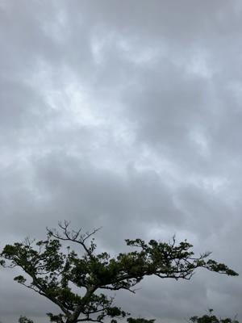

うるがいの話 ある日
最新: 私のかぁーちゃん【うるがいの話 ある日】とは 一日だけのプログです
『うるがいの話』の最新一日だけのプログで、通信料が少なく経済的だ。カニの画像をクリックすると全ての日付が載る『うるがいの話』サイトを表示します
|
|
【うるがいの話】 うるがい(ｳﾙｶﾞｲ urugai)とは、『もずくがに』の名前でとても大きくなります。 |
|---|---|
|
|
【カミマヤーの話】 猫のことを方言でマヤーといいます。カミマヤー（kamimayaa）とは、神の猫のことです。 |
|
【たながぁの音楽】 たながぁ（ﾀﾅｶﾞｰ tanagaa）とは手長えびのことで、何種類かあり大きいのは車 エビぐらいになります。 |

|
【ぶながぁの話】 ぶながぁ(ﾌﾞﾅｶﾞｰ bunagaa)とは、赤い髪の毛、赤い身体、そして身長は１ｍ２０ｃｍ ぐらい、川の蟹を食べているの目撃された。場所は沖縄県国頭郡大宜味村のと ある村僕の隣近所に住んでいる爺さんから、聞いた話です。 |
|
|
【ギーマの話】 ギーマ(giima)とは、山原の里山に咲くスズランに似た、 花を付けます。実は食べられます、 気が付くと口の周りが紫になっています。 |
2023年12月21日 (木）私のかぁーちゃん
15:16

映画『東京タワー オカンとボクと、時々、オトン』を見ていたら享年７４才
で亡くなった私の母親を、映画のオカンと比べていた。美形の母親（私のバー
チャン）と普通の父親（私のジィージー、ハブに咬まれ亡くなった）を親にも
ち、なぜか父親似の顔をもち（映画の、オカン役をした樹木希林さんと雰囲気
が似ている、そして私はその顔を引き継いだ）、アランドロンに似ているとい
う戦争孤児で酒乱のトォーチャンと生活していた。荒くれた漁師仲間を網元み
たいな役割をしていた実家では、彼らの水揚げ支払いを月締めで行っていた。
毎回、酒盛りとなり、そしてたまにはケンカ沙汰になるのである。あるとき母
親は、父の弟にビール瓶で頭を殴られのを、小さい私は目撃した。父親の酒乱
を止めさせるため、父親が酒を飲むと苦しくなる薬をコッソリと飲料水に混ぜ
ていた。父親は、飲み仲間に酒を飲むとなぜか、胸が苦しくなると言っていた
。父親と下の妹が相次いで亡くなったとき、当時住んでいる屋敷が悪いのでは
とカミングヮの長嶺伊佐雄さんに屋敷うがんをしてもらった。長嶺伊佐雄さん
から、私は『アンタのお母さんは、我慢強いし信頼できる人』と言われた。そ
して母親の姉から、空き家を利用していいよと言われたで母親はそこに、引っ
越し問題ありの実家は、潰して綺麗に更地にし借主の土地を明け渡した。ただ
その後も酒乱の姉にずーと苦労させられ続けて、姉が亡くなるまで難儀した。
姉が亡くなった後、気が楽になったのか、認知症のような状況に陥ったものの
快復していった。甥っ子が、母親と一緒に住む家を建てたいというので、名護
に投機で寝かしていた土地を元手に、近所で空いていた土地を手にいれ新築の
家を建てることになった。新築の起工式には、私も母親と一緒に参加した。し
ばらくして、母親は結核にかかり、宜野湾市我如古にある国立病院機構沖縄病
院に入院した。感染しないように毎週見舞いをするのだが、母親は徐々に衰弱
していった。やがて退院し新築の家にすむものの、直ぐに北部病院へ入院、病
院へ駆けつけたときは意識はなく、会話は出来なかった。死ぬ前に、大きく一
呼吸したあと亡くなった。病院から、出る時はススキのサンでそこかしこに居
るであろう母親の魂に、家に帰ろうねと言ったことをした（母親の妹に指導さ
れた）。新築の家は、仏間がありそこで４９日（毎週山原へ通った）、一年忌
まで行った。やがて、仏間は私の家に移し、毎日手を合せている。ヨメのお義
母さんが、私は悪いことしてないのに、何で苦しめられているのかと怒るが、
多分悪い事をしている筈だよと、９３才のお義母さんへ私は言う。
１４時５７分 ビットコインの総資産 ￥１８、０３２（↑１５０）